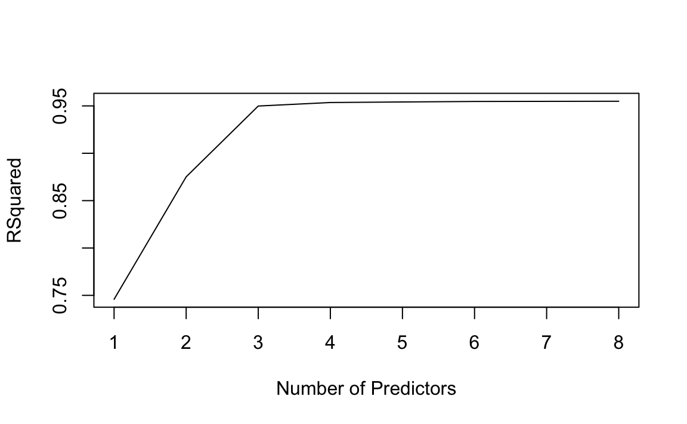
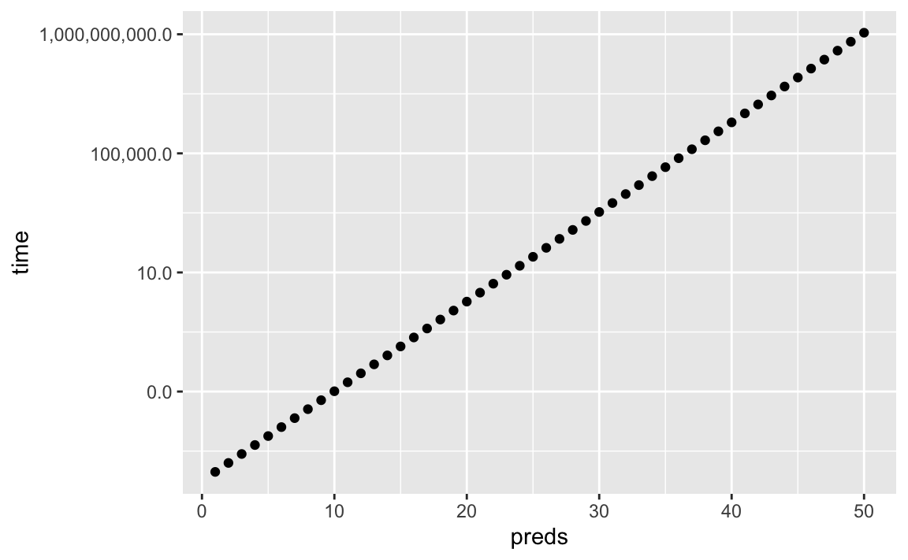
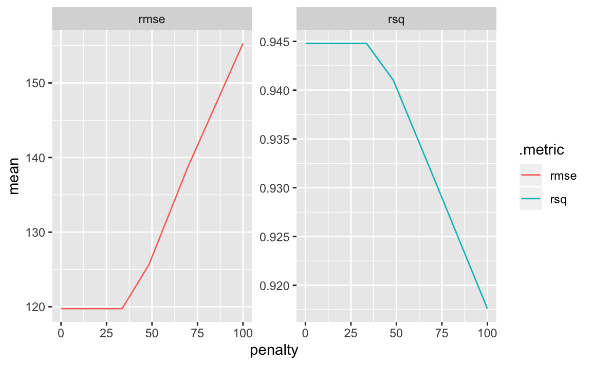

Chapter 6 Linear Model Selection And Regularization
library(tidyverse)
library(knitr)
library(skimr)
library(ISLR)
library(tidymodels)
library(workflows)
library(tune)
library(leaps) # best subset selectionBefore moving on to the non-linear world in further chapters, let’s discuss in some ways in which the simple linear model can be improved, by replacing plain least squares fitting with some alternative fitting procedures.
Why should we explore alternative fitting procedures? We will see that alternative fitting procedures can yield better prediction accuracy and model interpretability.
Prediction Accuracy: Provided the relationship between the response and its predictors is approximately linear, then least squares estimates will have low bias. If \(n >> p\), meaning that the number of observations \(n\) is much larger than the number of predictors \(p\), then the least squares estimates tend to also have low variance. As \(p\) approaches \(n\), there can be a lot of variability in the least squares fit, which could result in overfitting and poor predictions on future observations. If \(p\) > \(n\), there is no longer a unique least squares coefficient estimate; the method doesn’t work. By constraining or shrinking the estimated coefficients, we can significantly reduce the variance at the cost of a negligible increase in bias.
Model Interpretability: It is common for predictor variables used in a multiple regression model to not be associated with the response. Including these irrelevant variables leads to unnecessary complexity in the resulting model. If we could remove these variables by setting their coefficients equal to zero, we can obtain a simpler, more interpretable model. The chance of least squares yielding a zero coefficient is quite low. We will explore some approaches for feature selection.
We will discuss three important classes of methods:
- Subset selection. This approach involves identifying a subset of the \(p\) predictors that we believe to be related to the response.
- Shrinkage. This approach involves fitting a model of all \(p\) predictors, but shrinking (also known as regularizing) the coefficients of some predictors towards zero. This can also result in variable selection when coefficients are shrunk towards exactly zero.
- Dimension Reduction. This approach involes projecting the \(p\) predictors into a \(M\)-dimensional subspace, where \(M < p\). This is achieved by computing \(M\) different linear combinations, or projections, of the variables. Then, we use these \(M\) projections as predictors.
6.1 Subset Selection
6.1.1 Best Subset Selection
We fit a separate least squares regression for each possible combination of the \(p\) predictors. That is, we fit all \(p\) models that contain exactly one predictor, all \(\binom{p}{2}\) that contain exactly two predictors, and so forth. Once we fit all of them, we identify the one that is best.
Here are the steps:
- Let \(M_0\) denote the null model of no predictors. This is simply the sample mean.
- For \(k = 1,2,...p\):
- Fit all \(\binom{p}{k}\) models that contain exactly \(k\) predictors.
- Pick the best among these \(\binom{p}{k}\) models via largest \(R^2\).
- Select a single best model from \(M_0,...,M_p\) using cross-validation, \(C_p\) (AIC), BIC, or adjusted \(R^2\).
Once we complete step 2, we reduce the problem from one of \(2^p\) possible models to one of \(p+1\) possible models. To complete step 3, we can’t use a metric such as \(R^2\) anymore. Remember that \(R^2\) increases monotonically as the number of features included in the models increases. Therefore, we need to pick the model with the lowest estimated test error.
credit <- ISLR::Credit %>% as_tibble() %>% janitor::clean_names() %>%
select(-id)
regfit_full = regsubsets(balance ~., data = credit)
reg_summary <- summary(regfit_full)
plot(reg_summary$rsq, xlab = "Number of Predictors", ylab = "RSquared", type = "l")
As said above, \(R^2\) will always increase as add more predictors. In this case, it ramps up through three predictors before flattening out. We could apply the same idea to other types of models such as logistic regression. Instead of ordering by \(R^2\), we could sort by deviance, a measure that plays the role of \(R^2\) for a broader class of models. Deviance is negative two times the maximized log-likelihood; the smaller the deviance, the better the fit.
One problem with best subset selection is the computational cost. Fitting \(2^p\) possible model quickly grows prohibitively expensive.
cpu_cost <- tibble(preds = seq(1,50))
cpu_cost <- cpu_cost %>% mutate(time = 2^preds/1000000)
ggplot(cpu_cost, aes(x = preds, y = time)) +
geom_point() +
scale_y_log10(label=scales::comma)
In this made-up example, fitting best subset selection for 20 predictors would take less than ten seconds, which is reasonable. At 40 predictors, that number is arround 100,000 seconds, more than a full day. Since it is common for a dataset to contain hundreds, if not thousands, of predictors, we need to explore more computationaly efficient alternatives.
6.2 Stepwise Selection
Due to computational costs, best subset selection cannot be applied with very large \(p\). There are also statistical problems when \(p\) is large. The larger the search space, the higher chance of finding models that look good on the training data. An enormous search space can lead to overfitting and high variance of the coefficient estimates.
For both of these reasons, stepwise methods, which explore a more restricted set of models, are attractive alternatives.
6.2.1 Forward Stepwise Selection
Forward stepwise selection is a computationally efficient alternative to best subset selection. It begins with a model containing no predictors, and then adds predictors one-at-a-time, until all of the predictors are in the model. At each step, the variable that gives the greatest additional improvement to the fit is added to the model.
Here are the steps:
- Let \(M_0\) denote the null model of no predictors. This is simply the sample mean.
- For \(k = 0,1,...p-1\):
- Consider all \(p-k\) models that augment the predictors in \(M_k\) with one additional predictors.
- Choose the best among these \(p - k\) models, and call it \(M_{k+1}\). Best is defined as having the highest \(R^2\).
- Select a single best model from \(M_0,...,M_p\) using cross-validation, \(C_p\) (AIC), BIC, or adjusted \(R^2\).
Forward stepwise selection fits \(1+p(p+1)/2\) models, which we can approximate to \(p^2\). Computationally, this scales much better as \(p\) grows.
cpu_cost <- cpu_cost %>% mutate(time_fss = preds^2)
ggplot(cpu_cost, aes(x = preds)) +
geom_point(aes(y=time)) +
geom_point(aes(y=time_fss)) +
scale_y_log10(labels=scales::comma)
Choosing the best model of those that augment \(M_k\) with one additional predictor is simple. We can simply used the \(R^2\) value. Step 3, in which we have to evaluate which model among our selected models is best, requires using a method that can estimate test error.
The trade-off of being computationally cheap compared to best subset selection is that it will not always find the best model out of the \(2^p\) possible models. Imagine a dataset containing \(p=3\) predictors. The best possible one-variable model contains \(X_1\), and the best possible two-variable model contains \(X_2\) and \(X_3\). Forward stepwise selection will never produce the ideal two-variable model, since it will always fit \(X_1\) to the one-variable model. Thus, \(M_2\) will always contain \(X_1\).
6.2.2 Backward Stepwise Selection
Backward stepwise selection is similar to forward stepwise selection, but starts with the full least squares model containing all \(p\) predictors. It then iteratively removes the least useful predictor, one-at-a-time.
Here are the steps:
- Let \(M_0\) denote the full model of all \(p\) predictors.
- For \(k = p, p-1,...,1\):
- Consider all \(k\) models that contain all but one of the predictors in \(M_k\), for a total of \(k-1\) predictors.
- Choose the best among these \(k\) models, and call it \(M_{k-1}\). Best is defined as having the highest \(R^2\).
- Select a single best model from \(M_0,...,M_p\) using cross-validation, \(C_p\) (AIC), BIC, or adjusted \(R^2\).
Like forward stepwise selection, we search through approximately \(p^2\) models. Also like forward stepwise selection, we are not guaranteed to yield the best model containing a subset of the \(p\) predictors. Backward stepwise selection requires \(n\) to be larger than \(p\) in order to fit the full model.
6.2.2.1 Hybrid Approaches
Another alternative is a hybrid approach. Variables can be added to the model sequentially, as in forward selection. However, after adding each new variable, the method may also remove any variables that no longer provide an improvement in model fit. Such an approach attempts to mimic best subset selection while retaining the computational advantages of forward and backward stepwise selection.
6.3 Choosing the Optimal Model
6.3.1 \(C_p\), AIC, BIC, and Adjusted \(R^2\).
In general, the training set \(MSE\) is an underestimate of the test \(MSE\). When we fit a model to the training data using least squares, we specifically estimate the regression coefficients such that the training RSS is as small as possible. Training error will always decrease as we add more variables to the model, but the test error may not. Therefore, we cannot use metrics such as \(R^2\) to select from models containing different numbers of variables.
We do have a number of techniques for adjusting the training error. We will now consider four such approaches: \(C_p\), Akaike information criterion (AIC), Bayesian information criterion (BIC), and adjusted \(R^2\).
For a fitted least squares model containing \(d\) predictors, the \(C_p\) estimate of test MSE is computed using the equation
\[ C_{p}=\frac{1}{n}\left(\mathrm{RSS}+2 d \hat{\sigma}^{2}\right) \]
where \(\hat\sigma^2\) is an estimate of the variance of the error \(\epsilon\) associated with each response measurement. Typically, \(\hat\sigma^2\) is estimated using the full model with all predictors. The \(C_p\) statistic essentially adds a penalty of \(2d\hat\sigma^2\) to the training RSS in order to adjust for the fact that the training error tends to underestimate the test error. The more predictors, the higher the penalty.
The AIC criterion is defined for a large class of models fit by maximum likelihood. In the case of the model with Gaussian errors, maximum likelihood and least squares are the same thing.
\[ AIC=\frac{1}{n\hat\sigma^2}\left(\mathrm{RSS}+2 d \hat{\sigma}^{2}\right) \]
For least squares, \(AIC\) and \(C_P\) are proportional to eachother.
BIC looks similar but can place a higher penalty on models with many variables.
\[ BIC=\frac{1}{n\hat\sigma^2}\left(\mathrm{RSS}+log(n){\sigma}^{2}\right) \]
\(BIC\) replaces the \(2d\hat\sigma^2\) used by \(C_p\) with a \(log(n)\hat\sigma^2\). Since \(log(n) > 2\) for any \(n > 7\), \(BIC\) places a heavier penalty on models with many variables and tends to select smaller models than \(C_p\).
Adjusted \(R^2\) is another approach for selecting among a set of models. Remember that \(R^2\) is defined as \(1 - RSS/TSS\). Since \(RSS\) can only decrease as more variables are added to the model, \(R^2\) always increases as more variables are added. For a least squares model with \(d\) variables, adjusted \(R^2\) is calculated as
$$ Adjusted R^2=1-
$$
Maximizing the adjusted \(R^2\) is equivalent to minimizing the numerator, \(RSS/(n-d-1)\). The idea behind adjusted \(R^2\) is that additional noise variables will increase \(RSS\) but also increase \(d\), which can ultimately increase \(RSS/(n-d-1)\). Adjusted \(R^2\) pays a price for the inclusion of unnecessary variables in the model.
\(C_p\), AIC, and BIC all have rigorous theoretical justifications that are beyond the scope of this book. AIC, BIC, and \(C_p\) can also be defined for more general types of models.
6.3.2 Validation and Cross-Validation
We can directly estimate the test error using the validation set and cross-validation methods.
This procedure has an advantage over AIC, BIC, adjusted \(R^2\) and \(C_p\) in that it provides a direct estimate of the test error and makes fewer assumptions about the underlying model. It can also be used in cases in which it is hard to estimate \(\sigma^2\) and/or the number of degrees of freedom is not known.
Cross-validation has become a more attractive approach as computing power has increased.
Let’s use cross-validation to determine the best of the \(d\)-variable models for the Credit dataset.
# TODO solve this
# bic from forward selection
forward_fit <- regsubsets(data = credit, balance ~ ., nbest=1, nvmax=8, method="forward")
forward_summary <- summary(forward_fit)
forward_tibble <- tibble(preds = seq(1:length(forward_summary$bic)),
bic = forward_summary$bic)
# validation with 3/4 training set
credit_split <- initial_split(credit, prop = 3/4)
credit_training <- training(credit_split)
credit_test <- testing(credit_split)
## find best model from null to full
# 10 pred cols
# TODO tidy way?
num_preds <- ncol(credit %>% select(-balance))
# cross-validation with k=10
#lm(data = credit, balance ~ credit[seq(1,num_preds)])6.4 Shrinkage Methods
The subset methods above involve fitting a least squares model that contains a subset of the predictors. We can also fit a model containing all \(p\) predictors that constraints, or regularizes, the coefficient estimates. Shrinking the coefficient estimates can significantly reduce their variance. The two best-known techniques are ridge regression and the lasso.
6.4.1 Ridge Regression
Ridge regression is very similar to least squares, except we are minimizing the coefficients by a different quantity.
\[ \sum_{i=1}^{n}\left(y_{i}-\beta_{0}-\sum_{j=1}^{p} \beta_{j} x_{i j}\right)^{2}+\lambda \sum_{j=1}^{p} \beta_{j}^{2}=\mathrm{RSS}+\lambda \sum_{j=1}^{p} \beta_{j}^{2} \]
Where \(\lambda\) is a tuning parameter to be determined separately. Similar to least squares, we seek coefficient estimates that make RSS small. However, we’re adding a second term, \(\lambda \sum_{j=1}^{p} \beta_{j}^{2}\), called a shrinkage penalty. This shrinkage penalty is small when \(\beta_1,...,\beta_p\) are close to zero, and thus has the effect of shrinking the estimates of \(\beta_j\) towards zero. The penalty, \(\beta_{j}^{2}\), is also known as an L2 penalty. \(\lambda\) controls the relative impact of these two terms (at \(\lambda=0\), this is the original least squares estimate). Ridge regression will produce a different set of coefficient estimates for each value of \(\lambda\). Selecting a good value of \(\lambda\) is crtical.
Notice the shrinkage is applied not to the intercept \(\beta_0\). If the variables have been centered to have mean zero before ridge regression is performed, then the estimated intercept will take the value of the sample mean.
6.4.1.1 An Application to the Credit Data
Let’s test out ridge regression on our credit data set.
We again split into training/test splits.
# TODO Find better example set
# validation with 3/4 training set
credit_split <- initial_split(credit, prop = 3/4)
credit_train <- training(credit_split)
credit_test <- testing(credit_split)Next, let’s specify a recipe in tidymodels. I want to remove zero-variance predictors as well as normalize numeric predictors (this is important when regularization is involved). At this moment, ridge_rec hasn’t performed any calculations. We need to prep() it to do so.
# ridge recipe
ridge_rec <- recipe(balance ~ ., data = credit_train) %>%
step_zv(all_numeric(), -all_outcomes()) %>% # remove zero variance predictors
step_normalize(all_numeric(), -all_outcomes()) %>%
step_dummy(all_nominal())
ridge_prep <- ridge_rec %>%
prep(strings_as_factors = FALSE)Now we can specify and fit our model. To specify L2 regularization used in ridge regression, we need to set mixture = 0. Our lambda value (penalty) is undecided, so we plug in a placeholder for now.
ridge_spec <- linear_reg(penalty = tune(), mixture = 0) %>% # mixture = 0 meaning no L1 penalty
set_engine("glmnet")
wf <- workflow() %>%
add_recipe(ridge_rec)
ridge_fit <- wf %>%
add_model(ridge_spec) %>%
fit(data = credit_train)
# workflow
ridge_fit %>%
pull_workflow_fit() %>%
tidy()## # A tibble: 1,200 x 5
## term step estimate lambda dev.ratio
## <chr> <dbl> <dbl> <dbl> <dbl>
## 1 (Intercept) 1 5.21e+ 2 400049. 3.60e-36
## 2 income 1 2.19e-34 400049. 3.60e-36
## 3 limit 1 4.04e-34 400049. 3.60e-36
## 4 rating 1 4.05e-34 400049. 3.60e-36
## 5 cards 1 5.77e-35 400049. 3.60e-36
## 6 age 1 -6.15e-38 400049. 3.60e-36
## # … with 1,194 more rows6.4.1.1.1 Tuning Lambda
# TODO clean up
library(tune)
set.seed(40)
credit_boot <- bootstraps(credit_train)
tune_spec <- linear_reg(penalty = tune(), mixture = 0) %>%
set_engine("glmnet")
lambda_grid <- grid_regular(range_set(penalty(), c(-1,2)), levels = 20)
doParallel::registerDoParallel()
set.seed(40)
ridge_grid <- tune_grid(
wf %>% add_model(tune_spec),
resamples = credit_boot,
grid = lambda_grid
)
ridge_grid %>%
collect_metrics() %>%
ggplot(aes(x = penalty, y = mean, colour = .metric)) +
facet_wrap(~.metric, scales="free") +
geom_line()
penalty = 0 is the original least squares fit. As lambda increases, the coefficients are being shrunk towards zero and we approach the null model. At this point, the decrease in variance (always predicting the sample mean) isn’t worth the increase in bias, and rmse begins to shoot up. Ridge regression doesn’t help our credit data set much.
It’s important to note that standard least squares is scale equivariant, multiplying \(X_j\) by a constant \(c\) simply scales the least squares coefficient estimates by \(1/c\). In ridge regression, in which the penalty involves summing up all the coefficients (\(\lambda \sum_{j=1}^{p} \beta_{j}^{2}\)), scale plays a big role. A predictor with a scale much larger than others can significantly affect the ridge regression. That is why it’s important to standardize the predictors prior to applying ridge regression.
6.4.1.2 Why Does Ridge Regression Improve Over Least Squares?
We again go back to the bias-variance tradeoff. As \(\lambda\) increases and coefficients are shrunk, the flexibility of the fit decreases, leading to reduced variance but increased bias. If \(\lambda\) gets too large and coefficients are shrunk further, they tend to be underestimated, and the variance reduction slows down while the bias increase speeds up.
When \(n\) is close to \(p\), the least squares estimate will be extremely variable. Ridge regression works best when the least squares estimates have high variance.
Computationally, ridge regression is much faster than best subset selection, which searches through \(2^p\) models. In contrast, ridge regression fits a single model for each \(\lambda\) value it checks.
6.4.2 The Lasso
One disadvantage of ridge regression is that it never fully shrinks coefficients towards zero. This may not be a problem for prediction accuracy, but could certainly affect model interpretability.
If we want to build a sparse model involving fewer predictors, then we need to explore a different shrinkage method.
The lasso is an alternative to ridge regression. The lasso coefficients, \(\hat\beta_{j}^{L}\), minimize the quantity
\[ \sum_{i=1}^{n}\left(y_{i}-\beta_{0}-\sum_{j=1}^{p} \beta_{j} x_{i j}\right)^{2}+\lambda \sum_{j=1}^{p} |\beta_{j}|=\mathrm{RSS}+\lambda \sum_{j=1}^{p} |\beta_{j}| \]
The only difference between this and the ridge regression is the penalty coefficient. The lasso uses an L1 penalty instead of an L2 penalty.
The lasso also shrinks the coefficients towards zero. But due to the L1 penalty, the lasso can force some coefficients to be exactly zero when \(\lambda\) is sufficiently large. The lasso thus has the ability to perform variable selection, producing sparse models which involve a subset of the original predictors.
Another way to think of the penalties is to imagine it as a constraint, or budget. We can think of ridge regression and lasso as fitting least squares with an additional constraint component, defined by the L1/L2 regularization. The sum of the squared coefficients (L2) or the sum of the magnitude of the coefficients (L1) can only be so large.